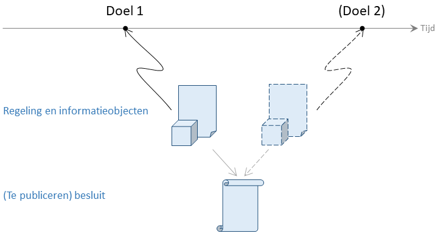

Doel
Wat betekent Doel in STOP?
Als het bevoegd gezag nieuwe regelgeving wil introduceren werkt het met verschillende objecten:
één versie van de tekst (inclusief afbeeldingen en dergelijke) voor elke regeling die moet ontstaan of gewijzigd worden voor de nieuwe regelgeving;
één versie van elk informatieobject dat onderdeel is van de nieuwe of gewijzigde juridische voorschriften of beleidsregels;
één versie van de regelgeving-gerelateerde informatie die aansluit bij de nieuwe regelgeving.
Om deze objecten binnen STOP aan elkaar te kunnen koppelen en de samenhang ertussen te beschrijven in het gehele proces wordt het veld doel gebruikt.
Doel is gedefinieerd als: Identificatie van de introductie van nieuwe of aangepaste regelgeving met één moment van inwerkingtreding, één moment waarop de regelgeving geldig wordt en eventueel één moment waarop de geldigheid van de regelgeving eindigt.
In STOP staat doel niet voor een algemeen beleidsdoel zoals voorgeschreven in Aanwijzing 2.3 Aanwijzingen voor de regelgeving lid b en c, maar specifiek voor de introductie van nieuwe regelgeving op één moment in de tijd.
Zodra het bevoegd gezag nieuwe regelgeving wil introduceren maakt het zelf een nieuwe identificatie van het doel aan of laat dat over aan gespecialiseerde software. De syntax van de doel-identifier moet voldoen aan de syntax-regels zoals beschreven op identificatie van niet-tekstuele informatie.
De functie van doel in STOP is het kunnen sturen van de consolidatie van de regelgeving. Het is geen juridisch authentiek gegeven dat in de tekst van de bekendgemaakte besluiten terug te lezen is. Er staat nergens in het besluit iets als de volgende wijzigingen hangen samen met doel X. De samenhang die door een doel wordt geïmpliceerd is wel terug te vinden in de inwerkingtredingsbepaling.
Fasering van regelgeving: twee doelen
Het proces van totstandkoming van de nieuwe regelgeving hoeft niet beperkt te blijven tot de regelgeving geassocieerd met één doel. Soms is al vanaf het begin duidelijk dat regelgeving gefaseerd geïntroduceerd wordt, waarbij bijvoorbeeld in eerste instantie een nieuw voorschrift gaat gelden dat op een later moment aangescherpt wordt. In dat geval is er sprake van twee doelen. De regelgeving voor beide doelen kan via separate besluiten bekendgemaakt worden, maar kan ook in één besluit landen.

Een voorbeeld is te vinden in dit besluit, waar in artikel IV onder E een nieuw artikel aan een bestaande regeling wordt toegevoegd (geassocieerd met doel 1):
Artikel 2:41a. Hoogte voortgezette inkomensondersteuning werkregeling
De inkomensondersteuning van de jonggehandicapte, bedoeld in artikel 2:41 bedraagt per dag:
a. indien de jonggehandicapte inkomen heeft: G – I;
b. indien de jonggehandicapte geen inkomen heeft: 0,75 * G, waarbij G staat voor de grondslag en I voor het inkomen per dag.In hetzelfde artikel onder F wordt de wijziging geassocieerd met doel 2 beschreven, waardoor artikel 2.41a komt te luiden:
Artikel 2:41a. Hoogte voortgezette inkomensondersteuning werkregeling
De inkomensondersteuning van de jonggehandicapte, bedoeld in artikel 2:41 bedraagt per dag:
a. bij een inkomen per dag van ten minste 20% van het minimumloon: G – I;
b. indien de jonggehandicapte een inkomen per dag van minder dan 20% van het minimumloon heeft: 0,7 * G – I, waarbij G staat voor de grondslag en I voor het inkomen per dag.In latere besluiten (1, 2) is de inwerkingtreding van de regelgeving geassocieerd met doel 1 op 1 januari 2017 bepaald, en doel 2 op 1 januari 2018.
Gelijktijdige inwerkingtreding
Dat een doel de introductie van nieuwe regelgeving op één moment in de tijd betreft, wil niet zeggen dat alle regelgeving die op hetzelfde moment in werking treedt hetzelfde doel moet hebben.
Twee voorbeelden:
Het doorlopen van het gehele proces kan langere tijd duren. Bij een bevoegd gezag kunnen er daardoor meerdere trajecten lopen die elk leiden tot introductie van nieuwe regelgeving, elk met een andere aanleiding. Voor elk traject wordt een apart doel geïdentificeerd. Aan het einde kan blijken dat meerdere trajecten op hetzelfde moment leiden tot een definitief besluit en een gelijke datum van inwerkingtreding.
Het kan vooraf nog niet duidelijk zijn of alle onderdelen van nieuwe regelgeving wel tegelijk in werking zullen treden. In dat geval kunnen de verschillende onderdelen met een apart doel geassocieerd worden, zodat al wel duidelijk is welke onderdelen als één samenhangende (wijziging van) regelgeving gezien worden. Het is daarna altijd nog mogelijk de onderdelen tegelijk in werking te laten treden, dus alle doelen met dezelfde datum inwerkingtreding te associëren.
Gebruik van meerdere doelen versus gedeeltelijke inwerkingtreding
Bij majeure wijzigen in regelgeving is het niet ongebruikelijk dat er veel tijd zit tussen het vaststellen van de nieuwe versies van de regelgeving en het in werking treden daarvan. De inwerkingtreding wordt in zo'n geval via een apart inwerkingtredingsbesluit geregeld. Het inwerkingtredingsbesluit wordt pas opgesteld nadat duidelijk is dat aan alle voorwaarden voor de invoering van de regelgeving (bijvoorbeeld aanpassing van ICT-systemen) is voldaan. Het is dan niet altijd te voorzien of alle voorschriften of beleidsregels van de nieuwe regelgeving ongewijzigd in werking zullen treden; er kan reden zijn om een deel ervan uit te stellen of te wijzigen.
In de huidige juridische praktijk wordt daar rekening mee gehouden. Het is de gewoonte om alle nieuwe of gewijzigde voorschriften als één geheel te presenteren, dus in STOP regelingversie(s) te maken en die met één doel te associëren, en als inwerkingtredingsbepaling op te nemen Deze regeling treedt in werking op een later te bepalen tijdstip, dat voor de verschillende artikelen of onderdelen daarvan verschillend kan worden vastgesteld. Pas in het besluit dat de inwerkingtreding regelt wordt per artikel aangegeven of het in werking treedt en op welk moment.
In het geïntegreerd proces van bekendmaken en consolideren ondersteunt STOP het benoemen van de inwerkingtreding van individuele artikelen niet. Inhoudelijk wordt hetzelfde bereikt door per moment van inwerkingtreding een nieuwe versie te maken op basis van de eerder bekendgemaakte regeling en deze via het renvooimechanisme in het inwerkingtredingsbesluit op te nemen.
Als bij het opstellen van de nieuwe regelgeving al bekend is (of verwacht wordt) dat bepaalde onderdelen niet meteen in werking (zouden kunnen) treden, biedt STOP het alternatief om deze onderdelen met een apart doel te associëren. In het inwerkingtredingsbesluit kunnen deze onderdelen alsnog hetzelfde inwerkingtredingsmoment krijgen als het hoofdbestanddeel van de nieuwe regelgeving. Tot die tijd kan in proefconsolidaties en bij het opstellen van regeling-gerelateerde informatie al wel rekening gehouden worden met een gefaseerde inwerkingtreding. Deze aanpak heeft daarom de voorkeur.